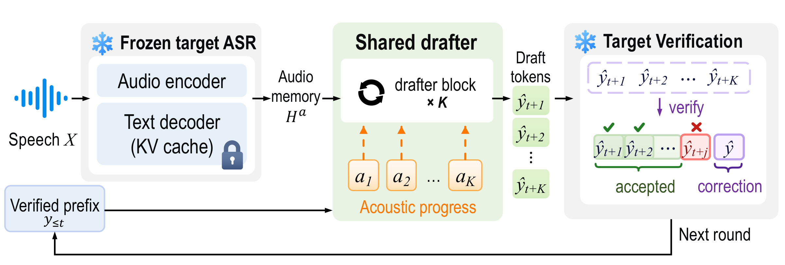
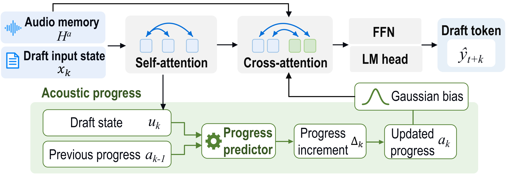

This archived trace has total AR latency and final text. Per-token timestamps were not recorded, so this card does not animate a token stream.
AnchorDraft
Ready
0.000sReady to start
Press Start demo to begin.
Draft tokens— / 8 accepted
AudioFull context
0 draft tokens accepted
ProgDraft Ours
Ready
0.000sReady to start
Press Start demo to begin.
Draft tokens— / 8 accepted
Acoustic progressAcross 8 draft steps
0 draft tokens accepted
One audio example on the same GPU. The two speculative runs replay their recorded timestamps; Target-only shows its separately measured baseline.
Timing & experiment details
AnchorDraft: fixed K = 3 training, without runtime correction. ProgDraft: joint progress-aware training with Random-K[3,8]. Both decode at K = 8.
Independent timing
The AnchorDraft and ProgDraft replay uses original recorded timestamps. The archived Target-only result has callback-free total latency and token IDs, but no per-token timestamps. All three latency figures below use independent callback-free runs.
Method
Decode latency
Speedup vs AR
Mean accepted τ
Token-ID match
Decode time includes prompt prefill and generation, after audio preparation. τ includes correction/bonus tokens. Independent runs on the same GPU; not a concurrent benchmark or an aggregate paper result.
A long draft needs to keep track of where it is in the speech. ProgDraft starts from the frozen target’s verification attention, predicts a positive acoustic displacement at each continuation step, and feeds the accumulated position back into audio cross-attention through a Gaussian bias.

Acoustic progress is initialized once per round and propagated across draft steps.

The target remains frozen; it verifies the proposed token prefix.
Try it locally
Upload a WAV or select a fixed test preset in the Gradio app. Target-only, AnchorDraft and ProgDraft use the same frozen target; the speculative paths use their existing checkpoints and shared verifier.
pip install -e '.[asr,demo]'
python demo/app.py
Configure the checkpoints first using the demo setup guide. Public checkpoint downloads and the paper link are pending.
Recording protocol and provenance
Original round times are measured after the existing verifier commits a prefix. The two GPU runs are independent and use identical hardware. Playback merges these times on one common clock; it does not align round numbers or normalize finishing times. The first LibriSpeech test-clean example in the fixed manifest was used without selection by outcome. No forced-alignment information enters inference.
Waveform markers show the actual clamped Gaussian centers; labels and tooltips retain raw recursive positions, which can exceed the audio duration. The trace includes both values.